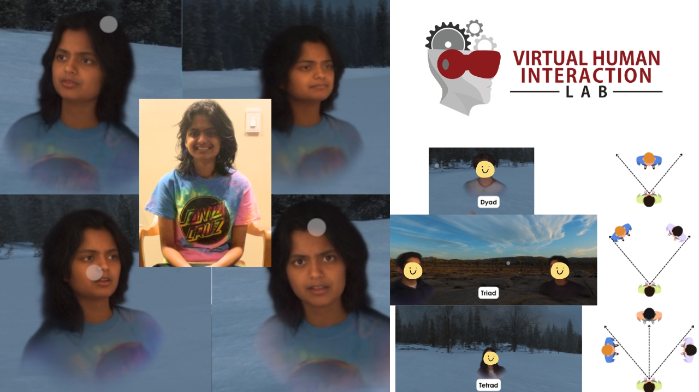

Honors Thesis
Led a 12-month study at the Stanford Virtual Human Interaction Lab testing the impact of spatialization and virtual environments on group communication. Recruited and ran 133 participants, trained 5 research assistants, and wrote Python and R scripts to process data. We found that 2D grids often create less social friction than 3D spatial setups.